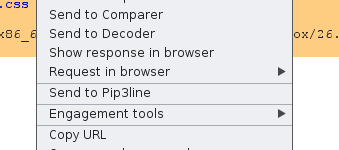
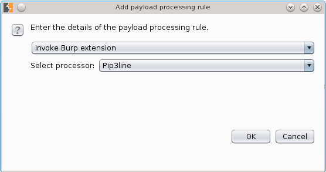

Documentation
Repository
This project is maintained by Gabriel Caudrelier
Pip3line comes with a burp plugin wich integrate Pip3line in Burp. It uses network TCP to communicate with the Pip3line process.
This first means an instance of Pip3line needs to be running for the Burp plugin to work
The plugin creates a new action in the Burp context menu called whenever right-clicking on a HTTP request or response
This will send either the current selection or the entire request/response if there is no selection to the Pip3line process
the plugin also register as an Intruder payload processor, which uses the Mass processing functionality of Pip3line.
